实际RAW、Mask、Ring观测与CAD投影
返回完整HERO图集
IIa_14.0mm / R10 / 视频004 / 历史锚帧候选
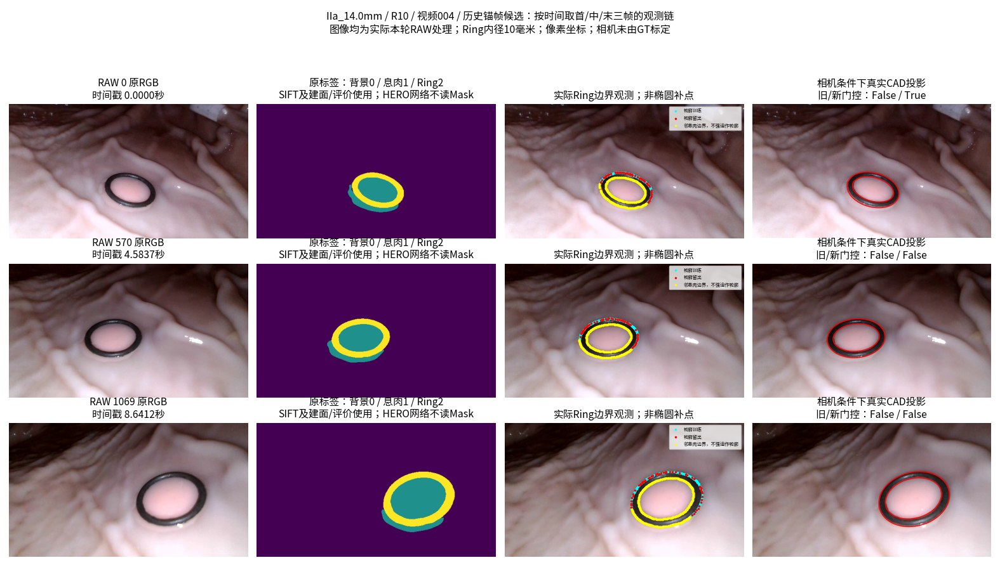
IIa_14.0mm / R10 / 视频005 / 历史锚帧候选
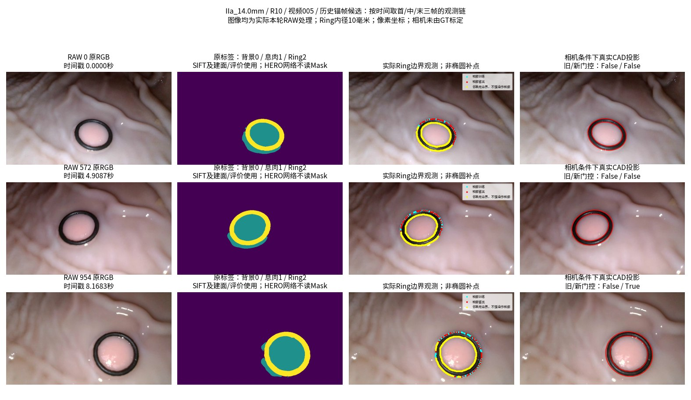
Ip_12.0mm / R10 / 视频004 / 历史锚帧候选
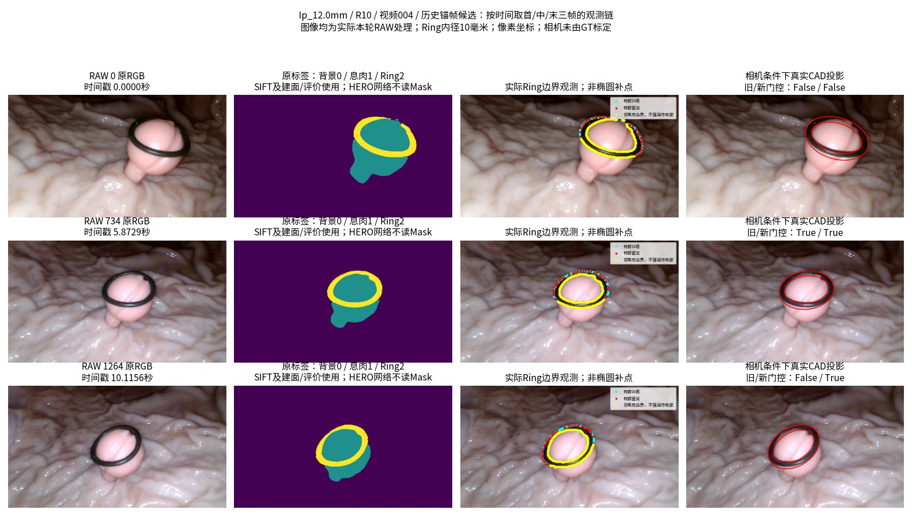
Ip_12.0mm / R10 / 视频005 / 历史锚帧候选
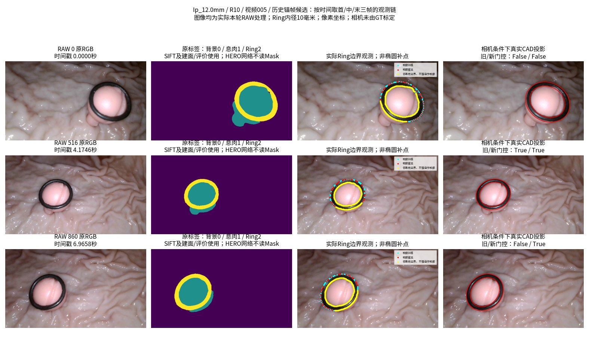
Ip_20.0mm / R10 / 视频004 / 历史锚帧候选
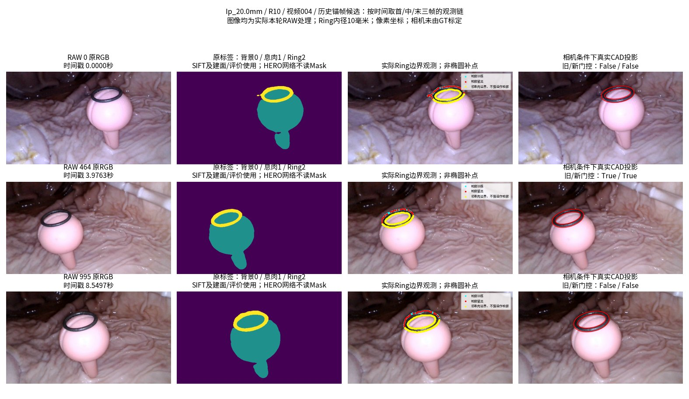
Ip_20.0mm / R10 / 视频005 / 历史锚帧候选
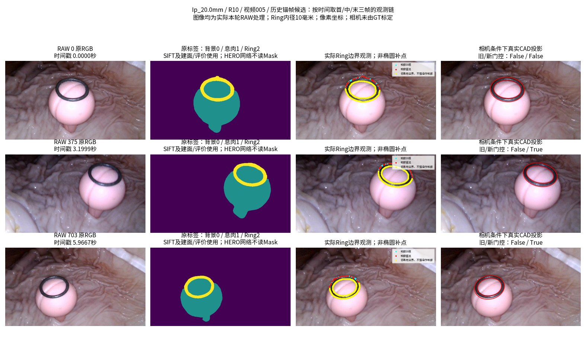
Ip_8.8mm / R5 / 视频004 / 历史锚帧候选
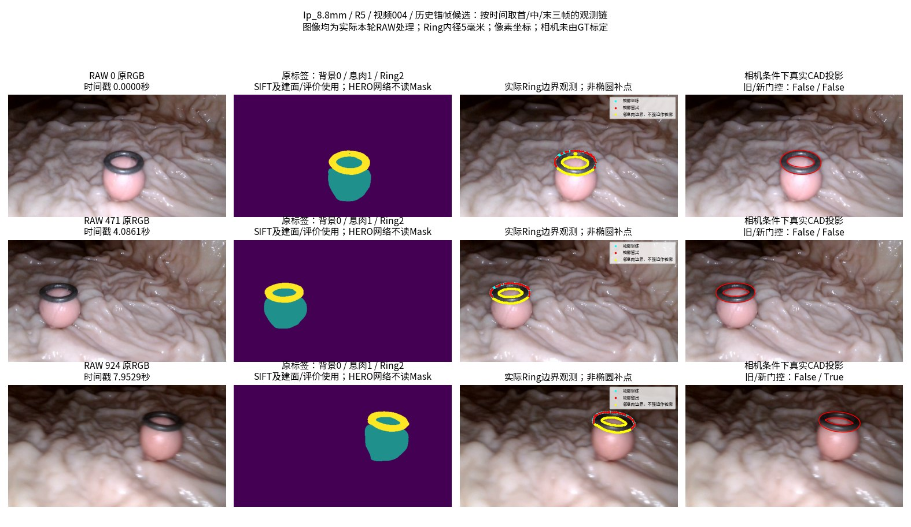
Ip_8.8mm / R5 / 视频005 / 历史锚帧候选
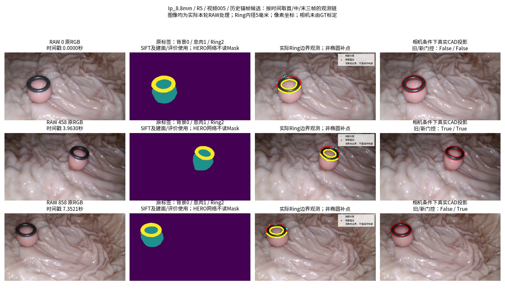
Is_14.0mm / R5 / 视频004 / 历史锚帧候选
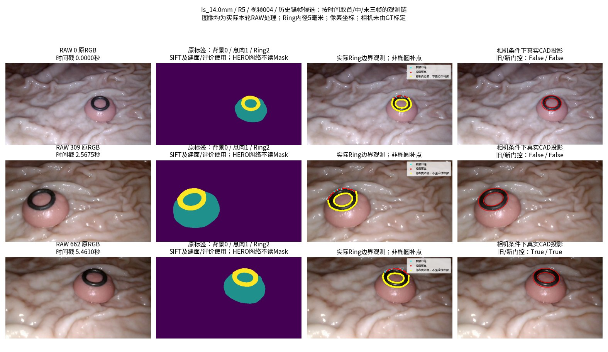
Is_14.0mm / R5 / 视频005 / 历史锚帧候选
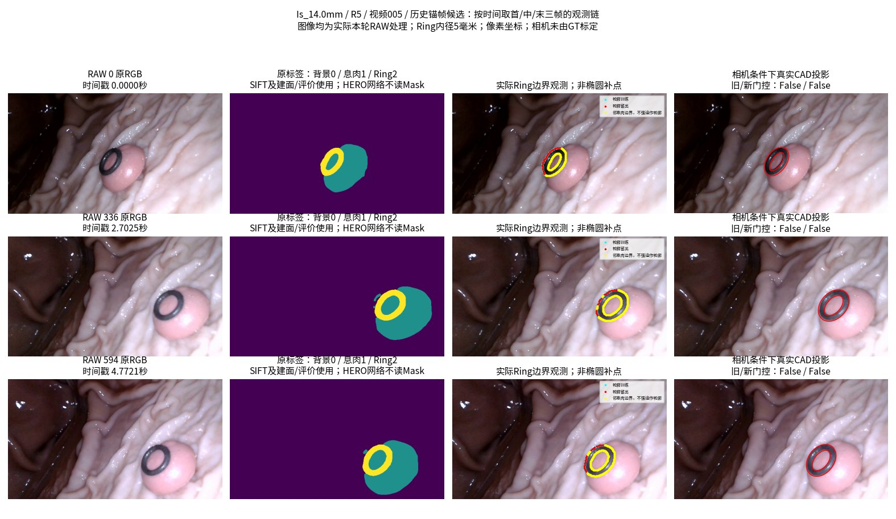
IIa_14.0mm / R10 / 视频004 / 连接图锚帧试点
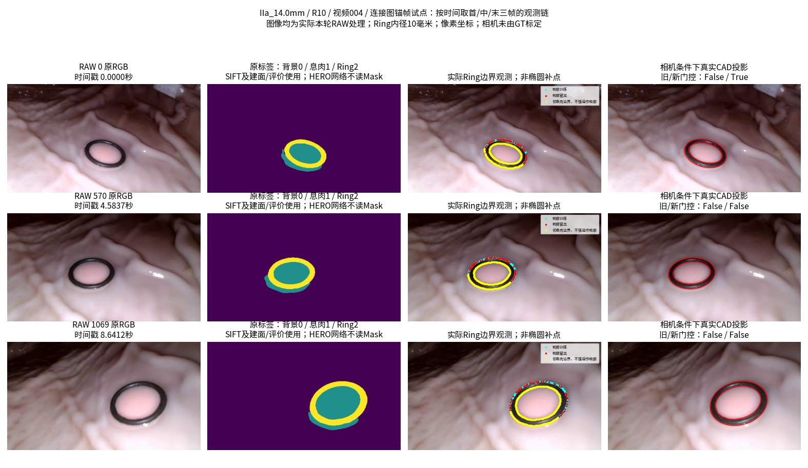
Ip_12.0mm / R10 / 视频005 / 连接图锚帧试点
Is_14.0mm / R5 / 视频005 / 连接图锚帧试点